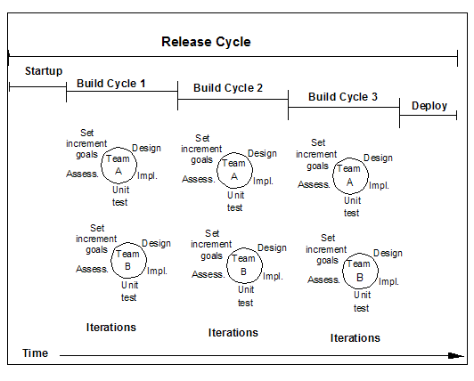

| Artifact: Increment Goals (ENG 104) |
 |
|
| The Increment Goals work product clarifies for everyone involved the goals of each build cycle and iteration. |
| Main Description | Incremental development is commonly used on a variety of projects and almost universally on object-oriented projects. An increment is a development period in which a specified subset of functionality or enabling infrastructure is designed, built, and tested or in which a subset of an existing system is extended or improved. A typical object-oriented project consists of a series of increments that successively build towards the required system. Increments are defined at three levels: release cycle, build cycle, and iteration. Increment Goals contain the goals of the build cycles and the iterations. The goal of the releases is kept separately in the release plan. There are two levels of Increment Goals that define what the working software will encompass at the end of each build cycle and iteration.  Figure 1. Release Cycle, Build Cycle, and Iteration |
|---|---|
| Brief Outline |
Textual description of the contents and goals of each build cycle and iteration. |
| Templates | |
|---|---|
| Examples |
| Make sure the incremental development goals are included in the project plan and are achievable with the resources, time, and budget available. |
| Impact of not having | Lack of clear goals always leads to problems on projects. In this case, increments may take longer than expected, solve fewer of the overall problems than expected, not be as compatible as expected, or suffer a successive decline in quality. |
|---|---|
| Reasons for not needing | If you have a very small project with a small project team and plan only one build cycle with a few sequential iterations before releasing the system, you probably do not need to identify Increment Goals. |
| Checklists | |
|---|---|
| Concepts | |
| Guidelines | |
| Estimation Considerations |
| © Copyright IBM Corp. 1987, 2012 All Rights Reserved Property of IBM These materials are intended only for use as part of an IBM engagement |